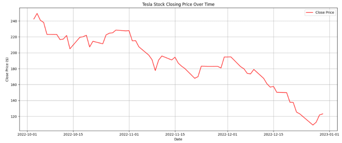
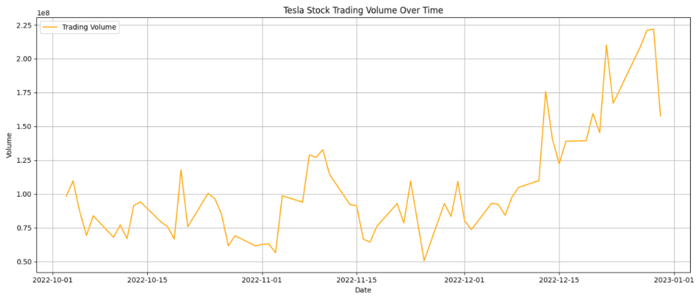
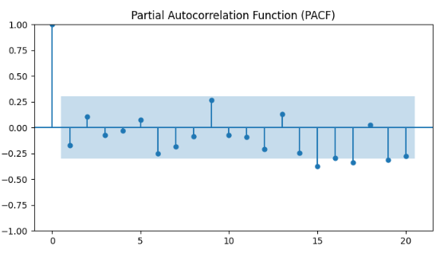
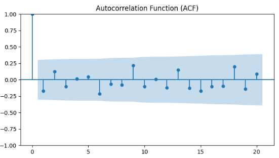
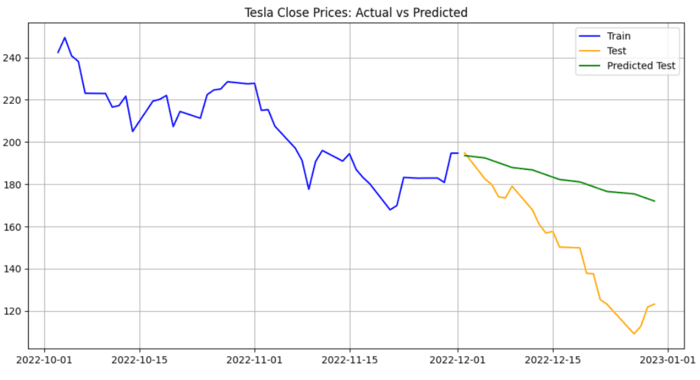
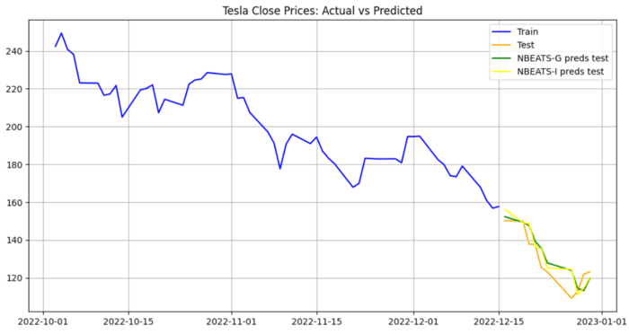

Future Charged: Predicting Tesla's Stock Price using ARIMA, Prophet and N-Beats
Tesla, Inc., an American electric vehicle and clean energy company, has revolutionized the automotive and energy industries with its innovative technologies and visionary approach. Founded in 2003, Tesla has not only become a symbol of the electric vehicle movement but also a significant player in the global stock market. Its stock, often featured in major indexes like the NASDAQ, has attracted widespread attention from investors, analysts, and the public for its remarkable growth and occasional volatility.
Why this project?
Predicting stock prices is a complex and dynamic challenge, owing to the myriad factors that influence market movements. Factors such as market sentiment, industry trends, global economic conditions, and company-specific news can significantly impact stock prices. The challenge becomes even more intriguing with stocks like Tesla's, known for their high volatility and unpredictable market behavior. Accurate prediction of such stock prices is crucial as it aids investors in making informed decisions, helps financial analysts in market trend analysis, and is vital for portfolio management and risk assessment in the ever-evolving financial markets. Therefore, I took over this challenge to enhance my analytical skills and learn more about time series analysis.
Area of Focus
The primary goal of this project is to develop a robust and reliable model that can accurately predict Tesla's stock price. Leveraging advanced time-series forecasting models such as ARIMA (AutoRegressive Integrated Moving Average), Prophet, and N-BEATS, this project aims to compare their predictive capabilties. By evaluating which model works best, the project seeks to contribute valuable insights to the field of financial analysis and offer practical tools for investors and analysts in navigating the dynamic landscape of the stock market. (Github Link)
About Data and it's source
The data for this project was sourced from Yahoo Finance using the yfinance API, a popular tool among data scientists and financial analysts for retrieving historical market data. The focus was on a recent and relevant timeframe, specifically from October 1, 2022, to January 1, 2023. This period was chosen to analyze the latest market trends and behaviors influencing Tesla's stock.
Exploratory Data Analysis
Upon retrieval, a thorough examination of the dataset revealed no missing values. This is significant as it implies a high degree of data completeness and integrity for the period under analysis. The absence of missing values eliminated the need for data cleaning techniques like interpolation, forward filling, or backward filling. This ensures that the analysis is based on unaltered, real-world data.
The analysis uncovered that during the specified timeframe, the minimum stock price of Tesla was USD 108.24, while the maximum price reached USD 257.5. This significant fluctuation highlights the volatility in Tesla's stock during this period, which could be attributed to various market factors. Such volatility could be crucial for short-term traders and investors in making informed decisions.
The average trading volume during this period was observed to be approximately 104 million shares with maximum trading volume reaching 221 million shares. High trading volumes can indicate high investor interest and can also lead to increased volatility. This aspect of the data could be essential for understanding market sentiment and liquidity.
Time Series Analysis
Data Splitting Strategy for Tesla Stock Price Forecasting
- Training Set: The first two months of data, from October 1, 2022, to December 1, 2022, were designated as the training set. This dataset is used to train and build the forecasting models.
- Testing Set: The remaining data, from December 2, 2022, to January 1, 2023, is used as the testing set. This dataset helps in evaluating the performance and accuracy of the models in predicting future stock prices.
Using ARIMA (AutoRegressive Integrated Moving Average)
ARIMA is a classic statistical model used for forecasting time series data. It's particularly well-suited for data with a clear trend or seasonal patterns. (Github Link)
How It Works
- Autoregressive (AR): This part of the model captures the relationship between an observation and a specified number of lagged observations.
- Integrated (I): This represents the differencing of raw observations to make the time series stationary, meaning the statistical properties of the series like mean and variance are constant over time.
- Moving Average (MA): This aspect models the error of the model as a combination of past errors.
A crucial step in using ARIMA for time series forecasting is checking whether the data is stationary. Stationarity in time series data means that its statistical properties, like mean, variance, and autocorrelation, are constant over time. This is important because ARIMA, being a linear model, assumes that the time series it is modeling is stationary.
Steps to Check or get Stationarity in ARIMA
-
Visual Inspection:
- Plotting the Time Series: Visual inspection of the time series plot for trends, seasonal variations, or cyclic patterns.
- Rolling Statistics: Analyzing moving averages or moving variances over time to assess changes in statistical properties.
-
Statistical Tests:
- Augmented Dickey-Fuller (ADF) Test: A test to check stationarity where a low p-value indicates stationarity.
- KPSS Test (Kwiatkowski-Phillips-Schmidt-Shin): A test with the null hypothesis that the time series is stationary. A low p-value suggests non-stationarity.
-
Transformations: If the time series is not stationary, transformations are needed. Common methods include:
- Differencing: Subtracting the current value from the previous one to achieve stationarity.
- Log Transformation: Applying logarithmic transformation to stabilize variance.
- Decomposition: Separating the time series into trend, seasonality, and residuals.
- Re-Testing: Re-testing the time series for stationarity after applying transformations.
-
Modeling Implications:
- The order of differencing (d in ARIMA(p,d,q)) is determined based on how many times the series had to be differenced to attain stationarity.
- Over-differencing can lead to an overly complex model with unnecessary parameters, while under-differencing will leave non-stationarity in the model, potentially leading to poor forecasts.
Determining ARIMA Parameters: p, d, q
-
Parameter d - Differencing::
- The d parameter represents the order of differencing required to make the time series stationary.
- As discussed earlier, stationarity can be checked using visual plots, statistical tests like the Augmented Dickey-Fuller test, and by looking at the autocorrelation function (ACF).
- In this project, first differencing (d=1) was sufficient to achieve stationarity in training set. At zero differencing (d=0) the p-value of the ADF Test was 0.39 (which is greater than 0.05 significance level). After differencing once (d=1), the p-value was 3.97e-11 (which is way less than 0.05 significance level).
- Parameter p - Autoregressive Term:
- The p parameter denotes the number of lag observations included in the model, or the lag order.
- To determine p, analysts often look at the Partial Autocorrelation Function (PACF) plot after the series has been made stationary.
- The PACF plot shows the correlation of a lagged variable with the series, with the correlation of the intervening lags removed. The point where the PACF plot crosses the upper confidence interval for the first time indicates the optimal number of lags to be used as the p value. In below PACF plot, it is evident that there are no significant lags, suggesting p = 0. 
- Parameter q - Moving Average Term:
- The q parameter indicates the size of the moving average window, or the order of the moving average component.
- The ACF plot is used to determine q after the series has been differenced.
- In the ACF plot, the number of lags that cross the upper confidence interval for the first time suggests the value of q. This represents the point where the correlation between the series and its lagged version becomes insignificant. In below ACF plot, it is evident that there are no signifianct lags, suggesting q = 0. 
- Practical Considerations:
- The above ACF and PACF plots suggest an ARIMA (0, 1, 0) model for time series forecasting. However, this model is quite simple and has limited capability in capturing complex trends in a time series. This model is often referred to as a "random walk" model.
- Sometimes, finding the right combination of p, d, and q involves trial and error, testing different combinations and comparing the model performance using metrics like AIC (Akaike Information Criterion) or BIC (Bayesian Information Criterion).
- Through trial and error, I found ARIMA (0, 2, 1) model performing much better with AIC value = 295.45 than ARIMA (0, 1, 0) with AIC value = 296.58.
Model Performance Results
Models Evaluated: ARIMA(0, 1, 0) and ARIMA(0, 2, 1)
Evaluation Metric: Root Mean Square Error (RMSE) on the test set
- ARIMA(0, 1, 0) Results:
- Model Description: This model is a simple differencing model without any autoregressive or moving average components.
- Performance: The ARIMA(0, 1, 0) model achieved an RMSE of 50.53 on the test set.
- Interpretation: An RMSE of 50.53 suggests that, on average, the model’s predictions deviate from the actual values by approximately 50.53 units. Given the simplicity of this model, this level of error might be expected.
- ARIMA(0, 2, 1) Results:
- Model Description: This model includes a second-order differencing with a first-order moving average component.
- Performance: The ARIMA(0, 2, 1) model showed an improved RMSE of 37.07 on the test set.
- Interpretation: The lower RMSE of 37.07 indicates a better fit to the data compared to the ARIMA(0, 1, 0) model. The inclusion of the moving average component helps in capturing some of the temporal dynamics missed by the simpler model.
Here is a visual representation of actual and predicted values by ARIMA (0, 2, 1) model on test set.

Conclusion:
The comparison between the two models demonstrates the impact of model complexity on forecast accuracy. While the ARIMA(0, 1, 0) serves as a basic model, the ARIMA(0, 2, 1) model, with its additional moving average component, provides a more accurate fit for the Tesla stock price data. These results highlight the importance of experimenting with different model specifications to find a more optimal balance between model simplicity and predictive accuracy.
Next, we will delve into the analysis and results obtained from using the Prophet library. This will provide another perspective on forecasting the Tesla stock prices, leveraging Prophet's unique capabilities in handling time series data with trends and seasonality.
Prophet
Developed by Facebook, Prophet is a forecasting tool tailored for time series data that displays patterns on different time scales such as yearly, weekly, and daily. It's known for handling missing data and outliers well. An important prerequisite for using Prophet is that the dataset must have the date column named as 'ds' and the target variable (the value to be predicted) column named as 'y'. (Github Link)
How It Works:
- Prophet decomposes time series into three main components: trend, seasonality, and holidays. It works well with daily observations that have strong seasonal effects.
- The model uses additive or multiplicative models to fit non-linear trends with yearly and weekly seasonality, plus holiday effects.
Implementing and Evaluating the Prophet Model:
- Data Preparation:
- Column renaming: Before applying Prophet, the data needs to be formatted appropriately:
- The date/time column should be renamed to 'ds'.
- The column containing the values to be predicted (such as stock prices in this case) should be renamed to 'y'.
- Splitting Data: The data is split into train and test sets as mentioned in the data splitting strategy above.
- Column renaming: Before applying Prophet, the data needs to be formatted appropriately:
- Model Initialization:
- An instance of the Prophet model was initiated with
daily_seasonality=Trueto capture daily patterns in the data.
- An instance of the Prophet model was initiated with
- Model Training:
- The model was then fitted on the training set, which spans from October 1, 2022, to December 1, 2022. This fitting process involves the model learning the patterns and trends in the Tesla stock price during this period.
- Model Evaluation:
- Upon applying the trained Prophet model to the test set (December 2, 2022, to January 1, 2023), the Root Mean Square Error (RMSE) was calculated to evaluate its performance. The model achieved an RMSE of 20.88 on the test set.
- This RMSE of 20.88 is significantly lower than the RMSEs obtained from both the ARIMA(0, 1, 0) and ARIMA(0, 2, 1) models, indicating a substantial improvement in predictive accuracy.
- Below is a visual representation of the actual and predicted values. The black dots are actual values and the blue line is the predicted values. The shaded region is the confidence interval which serves as the predicted range in which the predicted value is expected to lie. It is evident that the prophet model predicts that the stock price will keep falling down.
Conclusion:
The Prophet model's effectiveness in capturing complex patterns in Tesla's stock price data is evident, especially when compared to the ARIMA models. The inclusion of daily seasonality and its adeptness at handling different time scales and irregular trends contribute to this accuracy, showcasing Prophet's strengths in time series forecasting.
However, we are not done yet. Next, we will explore the potential of a cutting-edge deep learning model - N-Beats. This model, known for its versatility and power in handling time series data, represents a leap into the realm of advanced neural network architectures. By leveraging N-Beats, we aim to uncover deeper insights and achieve even more precise predictions for Tesla's stock price.
N-BEATS (Neural Basis Expansion Analysis for Time Series)
N-BEATS is a deep learning model specifically designed for time series forecasting. It's a significant advancement in the field because of its architecture and approach, which differ markedly from traditional time series models.
(Github Link)
One of the standout features of N-BEATS is its model architecture, which is purely based on neural networks. Unlike many other forecasting models, it doesn't rely on recurrent or convolutional layers. Instead, it uses a stack of fully connected layers (feedforward neural networks) with a novel backward and forward residual linkage system.
How It Works:
- Basis Expansion: N-BEATS works by producing a set of basis expansion coefficients which are used to construct the final forecast. This is akin to breaking down the time series into simpler, learnable patterns.
- Forward and Backcast: The model is unique in its use of both 'backcasting' and 'forecasting'. Backcasting is used to reconstruct the past data points (input), while forecasting is for predicting future data points (output).
- Blocks and Stacks: The architecture comprises multiple blocks and stacks. Each block makes its own prediction, which are then combined to form the final output.
- Lookback Period: The lookback period in N-BEATS refers to the amount of historical data that the model considers to make its predictions. It's the window of past observations that the model 'looks back' at when forecasting future values. The length of the lookback period is a critical parameter. It influences how much of the historical context the model has access to. A longer lookback period may provide more context, but it can also introduce more complexity and computational load.
- Forecast Period: The forecast period is the length of time into the future for which the model makes predictions. It is the horizon over which the model ‘forecasts’. A longer forecast period can provide more forward-looking insights but may come with reduced accuracy.
N-BEATS: Generic vs. Interpretable Architectures
Generic Architecture (N-BEATS-G)
- Overview: The Generic architecture of N-BEATS is designed to be a flexible and general-purpose model for time series forecasting. It doesn't impose any specific assumptions about the underlying patterns in the time series data.
- Structure: This architecture is built using stacks of fully connected layers. Each stack learns a different type of representation of the data, and their outputs are combined to make the final prediction.
- Basis Expansion: In the Generic model, the basis expansion is learned entirely from the data. This means the model automatically learns how to best represent and predict the time series based on the input data alone.
Interpretable Architecture (N-BEATS-I)
- Overview: The Interpretable architecture, as the name suggests, is designed to provide more interpretable results. It makes assumptions about the time series components and structures the model to learn these specific components.
- Component-Based: This model is designed to explicitly learn and forecast components such as trend and seasonality. Each stack in the architecture is dedicated to a specific aspect of the time series, like capturing long-term trends or seasonal patterns.
- Basis Functions: Unlike the Generic model, the Interpretable model uses predefined basis functions to model different components of the time series. This means the model is guided to learn representations that align with these predefined patterns.
Implementing N-Beats for Tesla Stock Price Forecasting
The implementation of the N-Beats model is carried out using the N-BEATS module from PyTorch Forecasting library, a specialized tool for time series forecasting with PyTorch. Moreover, I used Google's free T4 GPU in Googel Colab to train the model on train set.
- Data Preparation: Data Preparation includes complex preprocessing steps as outlined below:
- Creating Required Columns: The N-Beats module from PyTorch Forecasting requires transforming
Datecolumn toTime_idxcolumn ( for a numerical representation of time, essential for the model's understanding of temporal dynamics) and aGroupcolumn (For distinguishing multiple time series within the dataset. Although, we only have one time series dataset we still need to create this column). - Splitting the Data: Divided the dataset into training and testing sets for model training and subsequent evaluation based on the data splitting startegy mentioned at the start of this project
- Parameter Definition: Defined the parameters
max_encoder_lengthandmax_prediction_lengthfor the TimeSeriesDataset, which are the lookback period and forecast period as 7 and 1 respectively. Meaning, to lookback seven days to predict the next eighth day. - Time Series Dataset Preparation: Converted the training and testing DataFrames into TimeSeriesDataset type using
TimeSeriesDataset()module from PyTorch Forecasting, compatible with N-Beats. - DataLoader Creation: Created DataLoaders for both datasets to supply batches of data to the model during training with
batch_size=1024usingto_dataloader()class from PyTorch Forecasting.
- Creating Required Columns: The N-Beats module from PyTorch Forecasting requires transforming
- Model Definition:
- Generic Model: Defined the N-BEATS Generic model, with parameters based on the specifications from the N-BEATS research paper. (link)
- Interpretable Model: Similarly, defined the N-BEATS Interpretable model, adhering to the guidelines provided in the N-BEATS paper. This model variant offers insights into the components of the time series like trend and seasonality.
- Model Training and Optimization:
- Created a trainer instance for both the generic model and interpretable model, which handles the training process. Then, passing the training data to the trainers.
- Identified and loaded the best performing generic model and interpretable model from the checkpoint file.
- Forecasting and Results:
- Generated forecasts using the trained N-BEATS-G (Generic) model and N-BEATS-I (Interpretable) model and received RMSE scores of 7.346 and 7.502 respectively.
- The RMSE score pf 7.346 suggests that, on average, the generic model’s predictions deviate from the actual values by approximately 7.346 units. Given the complexity of stock price prediction, this indicates a strong performance, showcasing the model's capability in accurately capturing and forecasting the stock price movements.
- The slightly higher RMSE of Interpretable model, compared to the Generic model, reflects the model's focus on interpretability. While it provides valuable insights into the time series components, it does so with a marginal trade-off in raw predictive accuracy.
Below is the visual representation of the actual and predicted values from both models
Results and Performance Evaluation of Time Series Forecasting Models
We evaluated the performance of the N-BEATS Generic and Interpretable models against the ARIMA(0, 2, 1) and Prophet models, using the Root Mean Square Error (RMSE) metric (lower the better).
RMSE Results Comparison
- ARIMA(0, 2, 1) Model:
RMSE Score: 37.28. This higher RMSE indicates a relatively lower prediction accuracy for the ARIMA model in this context.
- Prophet Model:
RMSE Score: 20.88. The Prophet model shows better performance compared to ARIMA, yet with a higher RMSE than the N-BEATS models.
- N-BEATS Generic Model (N-BEATS-G):
RMSE Score: 7.346. The Generic model demonstrates superior performance with the lowest RMSE, indicating high predictive accuracy.
- N-BEATS Interpretable Model (N-BEATS-I):
RMSE Score: 7.502. Slightly higher than the Generic model, this score balances interpretability with a very competitive level of accuracy.
Overall Analysis
The N-BEATS models, both Generic and Interpretable, outperform the ARIMA and Prophet models in terms of RMSE, indicating more accurate predictions for Tesla's stock prices. The choice between N-BEATS Generic and Interpretable models depends on the specific requirement for accuracy versus interpretability in the forecasting task. The lower RMSE scores for the N-BEATS models suggest their higher suitability for complex, non-linear patterns typically observed in stock price data. Check the github (link) for more details and code/
Conclusion
This comprehensive evaluation highlights the effectiveness of advanced neural network-based models like N-BEATS in time series forecasting. Their superior performance in this case study suggests their potential applicability in various complex forecasting scenarios. The results also demonstrate the importance of model selection based on the specific characteristics of the data and the forecasting goals, balancing the need for accuracy and interpretability.